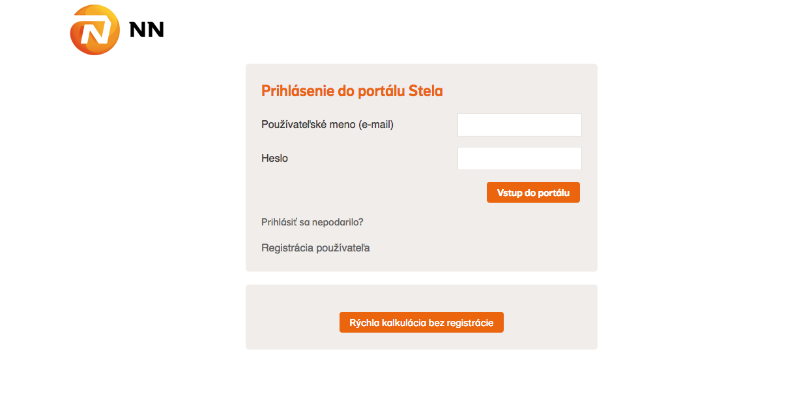

NN Stela
Jak na to a co vás čeká - příručka pro rychlý start ve vaší společnosti
Vážený obchodný partner,
s velkou hrdostí vám představujeme první z mnoha nadcházejících verzí aplikace NN Stela. Čeká nás dlouhá cesta a mnoho práce. Ale výsledek bude stát za to. Naše vize pro budoucnost pojištění neobsahuje ani gram papíru. Naopak maximálně jednoduché uzavření smlouvy vašimi makléři, rychlejší vyřízení pojistných smluv a tedy i rychlejší provize.
V tomto dokumentu naleznete ta nejdůležitější témata pro úspěšné zavedení NN Stela ve vaší organizaci.
Mějte prosím na paměti, že aplikaci vyvíjíme pro vás. Abychom vám co nejvíce usnadnili život, zvedli výsledky a odstranili bolesti spojené s papírem, ale i jinými řešeními. Jsme teprve na začátku a do cílové rovinky to je ještě daleko. Prosíme pomožte nám. Když budete chtít něco zlepšit, napište. Když vás něco bude štvát, zavolejte. Bez vás to nepůjde.
S pozdravy,
Peter Marko

Co je vlastně Stela a jak funguje
NN Stela je v první fázi nástroj pro vás - naše obchodníky - k výpočtu a sjednání pojistných smluv pro nové klienty. Využíváme moderní „cloud“ technologii značky Salesforce.
Podpis probíhá „na skle“ - funguje každý moderní dotykový telefon nebo tablet.
Aplikace je kompletně on-line - spustíte ji ve vašem internetovém prohlížeči.
V dalších fázích rozvoje aplikace se smlouva ihned po podpisu dostane na obrazovku pracovníka centrály. Výsledkem bude ještě rychlejší zpracování smluv.
Kroky, které vás čekají
Jak vypadá registrace z pohledu vašeho makléře
-
Makléř obdrží e-mail o možnosti zaregistrovat se.
Screenshot!!!!!!!
-
Po prokliknutí se dostává na registrační webovou stránku.
 -
Makléři přichází e-mail v pro první nastavení hesla. Pokud se jim registrace nepodaří, doporučujeme zkusit registraci znovu a ověřit si:
- že používají správnou e-mailovou adresu (při registraci musí zadat adresu, kterou nám vy předáváte)
- že nemají překlep v žádné z položek
V případě přetrvávajících potíží nám můžete napsat na mailto:aplikacie@nn.sk alebo zavolať svojho broker managera/managerku
Screenshot!!!!!!!
-
Makléři přicházejí dva e-maily. Pro úspěšné používání aplikace je potřeba otevřít a aktivovat e-mail od firmy Docusign. Tento e-mail je v angličtině a není v barvách NN.
Dva screenshoty vedle sebe Docusign a potvrzení registrace ze Salesforce
Úspěšná aktivace vypadá takto:
Screenshot aktivace Docusign!!!
-
Po aktivaci Docusign se může makléř přihlásit na adrese makler.nn.sk a sepsat svoji první smlouvu.
Jak probíhá vytvoření kalkulace pro klienta
Jak probíhá vytvoření smlouvy pro klienta
Jak probíhá elektronický podpis smlouvy
Technické detaily
Doporučené prohlížeče
NN Stela a Salesforce spoléhají na moderní technologie. Takže jediné, co si naši uživatelé musí nainstalovat, je moderní internetový prohlížeč. Který už stejně nejspíš má ve svém telefonu, tabletu a počítači.
Pokud ne, zde je přehled toho nejlepšího, z čeho si dnes lze vybrat: outdatedbrowser.com/sk
Předání dat pro registraci makléřů
Data prosím připravte ve formátu csv dle příkladu v příloze. Důležité je dodržení pořadí sloupců a také nastavení oddělovače (delimiter).
Uvádějte prosím e-mailové adresy makléřů, které reálně budou používat pro registraci do aplikace.
Stáhnout příklad CSVData v uvedeném formátu zašlete na e-mailovou adresu vašeho broker manažera alespoň 3 týdny před spuštěním NN Stela ve vaší organizaci.
Whitelisting e-mailů
Aplikace NN Stela zasílá makléřům automatické servisní zprávy. Například když si zažádají o reset hesla. V některých firmách jsme se setkali s nastavením, které tyto e-maily vyhodnotí jako spam a nepustí uživateli do složky přijatých zpráv.
Abychom zaručili hladký proces registrací, doporučujeme provést tzv. whitelisting domén:
- docusign.com
- salesforce.com
- nn.sk
nebo pokud to váš software neumožňuje, pak whitelisting e-mailových adres:
- docusign@docusign.com
- XYZ@salesforce.com
- XYZ@nn.sk
V případě potíží se neváhejte obrátit na vašeho Broker Managera
Známé problémy
V tomto seznamu naleznete věci, o kterých už víme.
- Pripoistenie SOP1 se nepočítá do slev a bonusů
- Nulový loading v aplikaci vyjadřuje hodnotou 100 %
- Povolání (osoby bez hlavního příjmu) mají jinou rizikovou skupinu. Co to znamená?
Často kladené otázky
Stala se mi chyba nebo chci abyste něco zlepšili, co mám dělat?
Po přihlášení do aplikace máte na hlavní stránce v menu záložku Zpětná vazba
Tam nám prosím co nejvíce popište, co se vám stalo, co vás štve a jak bychom to měli napravit.
Měl jsem rozpracovanou smlouvu a pak mi spadnul internet, můžu se k ní dostat zpět?
V tento moment bohužel nemůžete a musíte kalkulaci nebo kontrakt vytvořit znovu. Na této funkci pracujeme.
Kalkulačka nebo smlouva se mi po otevření načte prázdná, nemůžu vyplňovat žádná pole
Screenshot!
Aplikace z bezpečnostních důvodů a pro vaši ochranu po 90 minutách nečinnosti uživatele odhlásí. Když jste automaticky odhlášení a otevřete například kalkulaci, uvidíte obrazovku nahoře.
Stačí jít zpět na přihlášení makler.nn.sk a znovu se přihlásit
Nejde mi podepsat smlouva, co mám dělat?
Zkontrolujte si, že jste aktivovali Docusign v e-mailu, který vypadá takto a má předmět "Activate account"
screenshot